HEALTH SYNC · 26 СЕНТЯБРЯ 2026
Снова в стиле «Сна»
Цвет и фон домена, крупный основной показатель, карточки метрик и графики. Инсайты перенесены ниже и оформлены в той же палитре. Данные и оценки по-прежнему приходят с сервера.
Ниже — реальные скриншоты приложения в Simulator iPhone 17 Pro Max, iOS 26.5. Использованы синтетические данные. Это проверка интерфейса, а не подтверждение production-данных или фоновой синхронизации. После проверки эта версия установлена и запущена на физическом iPhone 16 Pro Max. Скриншоты ниже получены в Simulator.
Первые экраны
СонКольцо снова открывает экран, инсайты находятся после графика.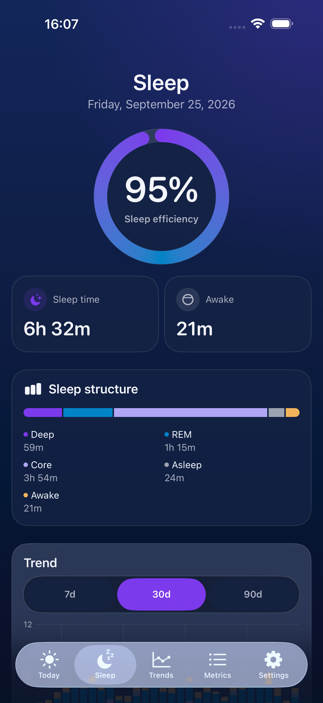
ВосстановлениеСерверный процент, показатели HRV и пульса, затем история.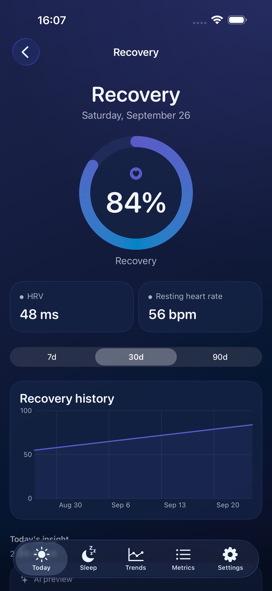
ЭнергияТекущий запас, ёмкость, расход, нагрузка и стресс.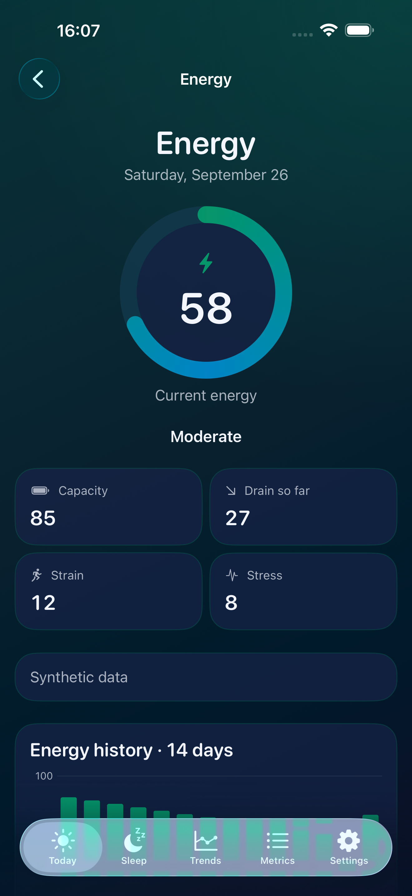
График сна
Подписи фаз и переключатель периода находятся внутри карточки. Для крупного текста элементы располагаются вертикально.
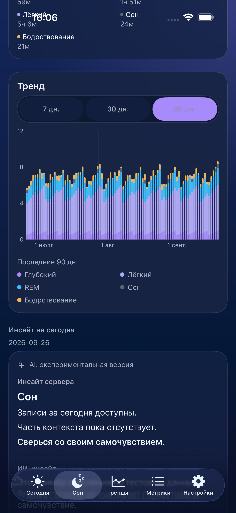
Детали и инсайты
Инсайты сна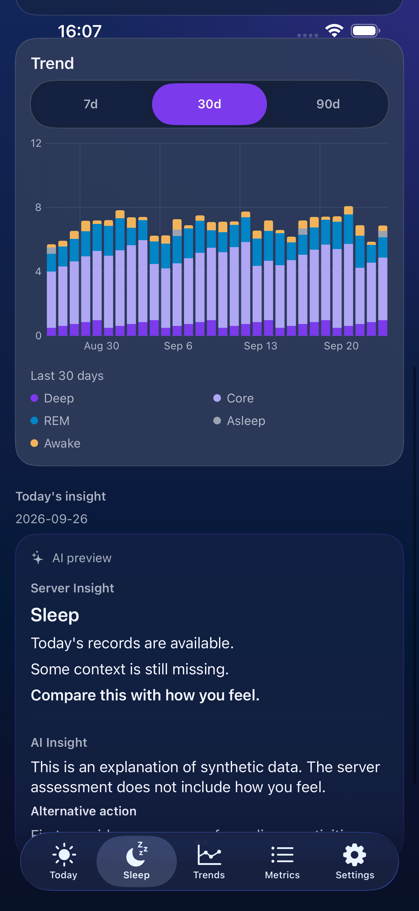
Инсайты восстановления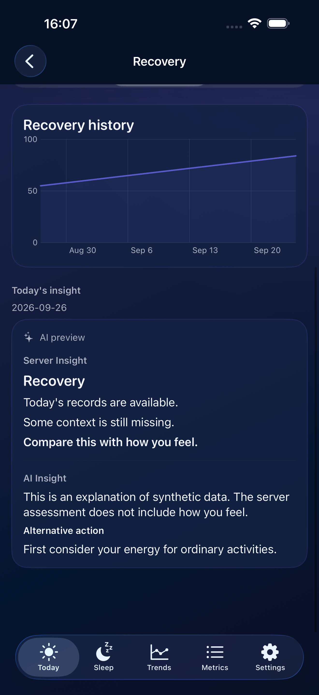
История энергииДневные значения раскрываются под графиком; отрицательные значения сохранены.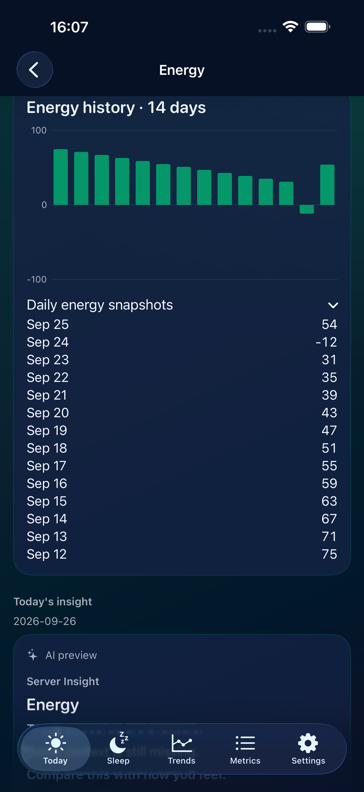
Локализация и крупный текст
Русский · крупный текст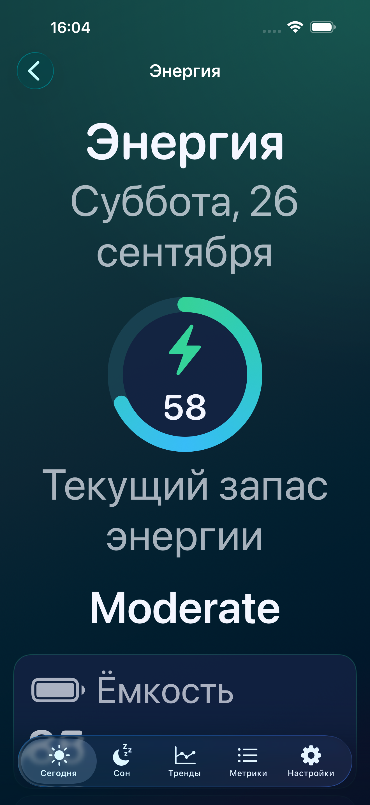
Сербский · светлая тема приложения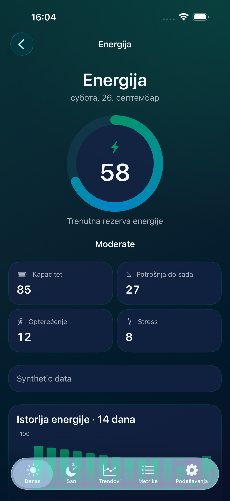
Легенда сна · крупный текст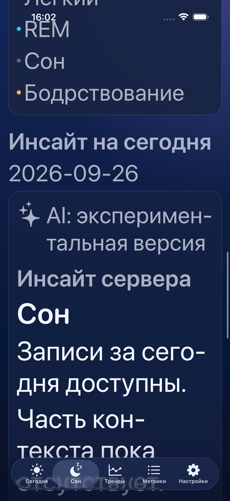
Предыдущее оформление энергии
Предыдущая версия была построена как набор обычных карточек. Текущая возвращает композицию согласованного образца.
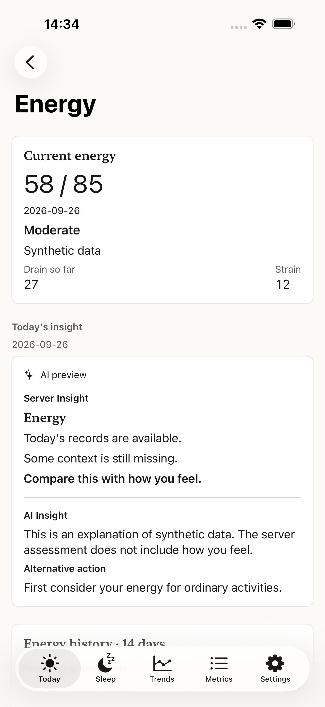
Проверки
Пройдены 16 unit-тестов и 7 UI-сценариев: первые экраны, переходы к инсайтам, отказ AI, отрицательная энергия, RU/SR, крупный текст и графики 7/30/90 дней. После финальных коррекций контраста повторно пройдены 2 затронутых UI-сценария. Финальная Release-сборка для Simulator успешна. Скриншоты просмотрены.
По отдельному запросу пользователя выполнены подписанная Release-сборка, установка и запуск на iPhone 16 Pro Max. Коммит и push не выполнялись.